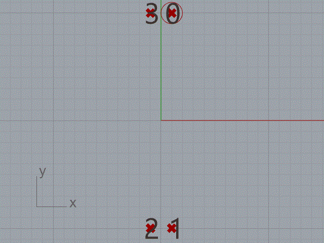

Using PointData Class
Method: MirrorPointQuadrant()
Mirror a Point3d into the 4 qudrants.
Code to implement MirrorPointQuadrant()
The code is very simple, you will need to include using LagaRhino; at the top of the node.
using LagaRhino;
private void RunScript(Point3d pt, ref object A)
{
A = LagaRhino.PointData.MirrorPointQuadrant(pt);
}
Result of Method MirrorPointQuadrant()

The animation shows 4 points in each quadrant. The point with the circle, is the one used as seed to mirror the quadrants.
Method: PointQuadrant()
Return in which quadrant the point belongs.
Code to implement PointQuadrant()
The code is very simple, you will need to include using LagaRhino; at the top of the node.
using LagaRhino;
private void RunScript(Point3d pt, ref object A)
{
A = LagaRhino.PointData.PointQuadrant(pt);
}
Result of method PointQuadrant()
The oder is +X,+Y > +X,-Y > -X,-Y > -X,+Y
Method: SortPointsByZ()
The points are sorted in the Z coordinate, from the minimum to maximum value.
Code to implement SortPointsByZ()
The code is very simple, you will need to include using LagaRhino; at the top of the node.
using LagaRhino;
private void RunScript(List<Point3d> ptList, ref object A)
{
A = LagaRhino.PointData.SortPointsByZ(ptList.ToArray());
}
Result of method SortPointsByZ()

The animation shows a circle travelling from the bottom to the top of the sorted list of points.
Method: SortPointsByXY()
Shows how to sort points from the X and then Y coordinate.
Code to implement SortPointsByXY()
The code is very simple, you will need to include using LagaRhino; at the top of the node.
using LagaRhino;
private void RunScript(List<Point3d> ptList, ref object A)
{
A = LagaRhino.PointData.SortPointsByXY(ptList.ToArray());
}
Result of method SortPointsByXY()
The image shows the sorted points. In color the points sorted by X coordinate. the points sorted by Y coordinate change by scale.
Method: TwoPointsInterpolation()
Demonstrate how to interpolate x amount of points between a start and end point.
Code to implement TwoPointsInterpolation()
The code is very simple, you will need to include using LagaRhino; at the top of the node.
using LagaRhino;
private void RunScript(Point3d ptA, Point3d ptB, double span, ref object A)
{
A = LagaRhino.PointData.TwoPointsInterpolation(ptA, ptB, span);
}
Result of method TwoPointsInterpolation()

The span parameter controls the distance between the points in the interpolation.